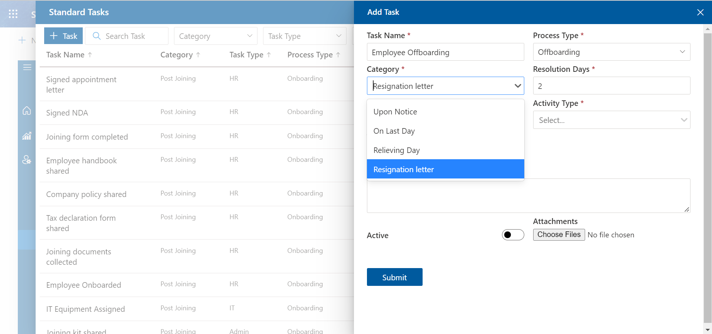
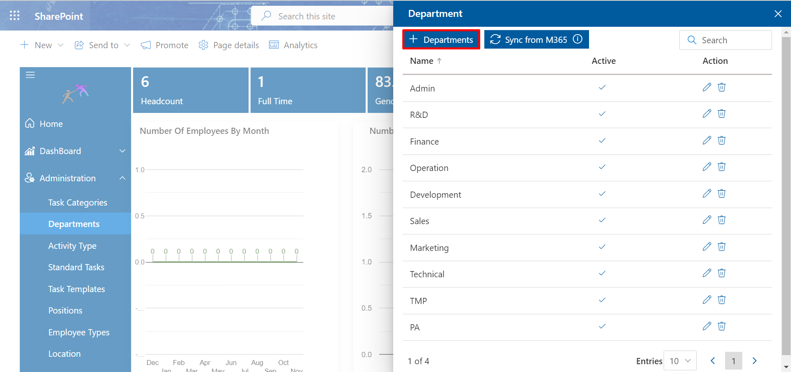

Administration
You must have Admin role to access Administration.
Categories
-
Catagories will reflects in the Standard Task.
- Click on + Add, this displays Add Category page.
- Add the Category name and select the Process Type as per your requirement.
-
Enable the Active toggle.
You must enable the Active toggle, then only links will be displayed.
- Click on Save button.
-
The categories will now reflect in the Standard Task under Administration from side navigation panel.

Add catagories: From here you can add categories and process as per your requirement.
Search : From here you can search different fields as per Name and Process.
Delete : Click the delete icon, this displays a dialog box. Click Yes button.
Edit:- You can edit only role. Click the edit icon, this display Edit User page. Update the role and click on Update button.
Departments
-
From here you can add department and add admin as per your requirement.
-
Click on + Departments, this displays Add Department page.
 -
Add the Department and search the Admin.
-
Enable the Active toggle.
You must enable the Active toggle, then only links will be displayed.
- Click on Save button.
-
The department now reflects in the Basic Information tab of Onboard page.
Add department
Sync from M365: If you click, it will fetch departments available in M365 and push the department names in list.
Search : From here you can search different fields as per Name and Admin.
Delete : Click the delete icon, this displays a dialog box. Click Yes button.
Edit:- You can edit department and/or admin. Click the edit icon, this display Edit Department page. Update the department and/or admin and click on Update button.
Activity Type
-
The activity type reflects in the Standard Task.
- Click on + Activity Type, this displays Add Activity Type page.
- Add the Activity Type and search the Admin.
-
Enable the Active toggle.
You must enable the Active toggle, then only links will be displayed.
- Click on Save button.
-
The activity type will now reflects in the Standard Task under Administration from side navigation panel.
From here you can add Activity Type and Admin as per your requirement.
Add activity type
Search : From here you can search different fields as per Name and Admin.
Delete : Click the delete icon, this displays a dialog box. Click Yes button.
Edit:- You can edit activity type and/or admin. Click the edit icon, this display Edit Activity type page. Update the activity type and/or admin and click on Update button.
Standard Task
-
Standard Task settings are managed to create the Task
Templates.
- Click on + Task, this displays Add Task page.
- Add the Task Name, Process Type, Catagory, Resolution Days, Department, Activity Type, Task Assigned Type and Remarks.
-
Enable the Active toggle.
You must enable the Active toggle, then only links will be displayed.
- You can attach necessary documents.
- Click on Submit button.
From here you can create Standard Task as per your requirement.
Standard Task
Task Name : Here you can create the task for the process of OnBoarding or OffBoarding.
Process Type : Here you have two process namely OnBoarding or OffBoarding. You can choose base on your requirements.
Category : This field is available based on the entries in Categories from Administration Panel.
Resolution Days : Here you can add the minimum number of days required to complete the task.
Department : This field is available based on the entries in Department from Administration Panel.
Activity Types : This field is available based on the entries in Activity Types from Administration Panel.
Task Assigned Type : Here you can assign the task to Reporting Manager or Regular. In regular you can assign to M365 members or teams(HR, IT and Admin).
Remarks : Here you can write any particular requirements for completion of the task.
Delete : Click the delete icon, this displays a dialog box. Click Yes button.
Edit:- You can edit Task Name, Process Type, Catagory, Resolution Days, Department, Activity Type, Task Assigned Type and Remarks. Click the edit icon, this display Edit Location page. Update the fields which you want to update and click on Update button.
Task Template
-
Task templates reflects in Task tab of Onboard page.
- Click on + Add, this displays Add Task Templates page.
- Add the Template Name and Process Type.
-
Enable the Active toggle.
You must enable the Active toggle, then only links will be displayed.
- Select the admin which you can update from Activity type.Select the actions from the list by checking the checkbox as per you requirement.
- Click on Save button.
- Click on + Position, this displays Add Position page.
- Add the Position.
-
Enable the Active toggle.
You must enable the Active toggle, then only links will be displayed.
- Click on Submit button.
- The postion now reflects in the Basic Information tab of Onboard page.
- Click on + Type, this displays Add Employee Type page.
- Add the Employee Type.
-
Enable the Active toggle.
You must enable the Active toggle, then only links will be displayed.
- Click on Submit button.
- The employee type now reflects in the in the Basic Information tab of Onboard page.
- Click on + Location, this displays Add Location page.
-
Enter the Zip code.
You must enter zip code only, as city reflects automatically.
-
Enable the Active toggle.
You must enable the Active toggle, then only links will be displayed.
- Click on Save button.
- The postion now reflects in the home page.
- Click on + Add, this displays Add Reason page.
- Enter the Reason For Offboard.
- Click on Save button.
- The reason for offboard now reflects in the in the Basic Information tab of Offboard page.
- Click on + Add, this displays Add Notice Period Days page.
- Enter the Notice Period Days.
- Click on Save button.
- The notice period now reflects in the in the Basic Information tab of Offboard page.
From here you can create Task Template as per your requirement.
Task Templates
Delete : Click the delete icon, this displays a dialog box. Click Yes button.
Edit:- You can edit Template Name and actions. Click the edit icon, this display Edit Task Template page. Update the fields which you want to update and click on save button.
You can clone the task by clicking on Colne button.
Positions
-
From here you can add position as per your requirement.
Add Positions
Sync from M365: If you click, it will fetch position available in M365 and push the position names in list.
Search : From here you can search different fields as per Name.
Delete : Click the delete icon, this displays a dialog box. Click Yes button.
Edit:- You can edit postion name. Click the edit icon, this display Edit Postion page. Update the Employee Type and click on Update button.
Employee Type
-
From here you can add position as per your requirement.
Add Employee Type
Search : From here you can search different fields as per Type.
Delete : Click the delete icon, this displays a dialog box. Click Yes button.
Edit:- You can edit Employee Type. Click the edit icon, this display Edit Employee Type page. Update the Employee Type and click on Update button.
Location
-
From here you can add location as per your requirement.
Add Location
Sync from M365: If you click, it will fetch location available in M365 and push the location names in list.
Search : From here you can search different fields as per Type.
Delete : Click the delete icon, this displays a dialog box. Click Yes button.
Edit:- You can edit Zip code. Click the edit icon, this display Edit Location page. Update the Zip Code and click on Update button.
Reason For Offboard
-
From here you can add Reason For Offboard as per your requirement.
Add Reason for Offboard

Delete : Click the delete icon, this displays a dialog box. Click Yes button.
Edit: You can edit Reason For Offboarding. Click the edit icon, this display Edit Reason page. Update the Reason For Offboarding and click on Update button.
Notice Period
-
From here you can add Notice Period as per your requirement.
Add Notice Period
Delete : Click the delete icon, this displays a dialog box. Click Yes button.
Edit: You can edit Notice Period Days. Click the edit icon, this display Edit Notice Period Days page. Update the Notice Period Days and click on Update button.